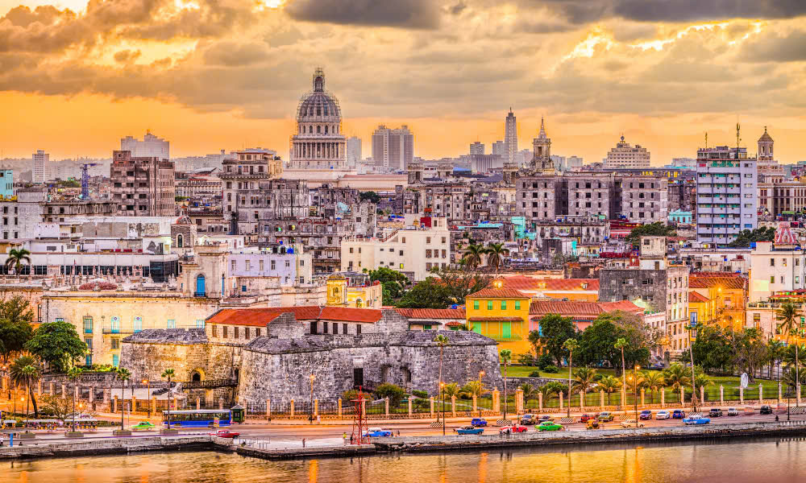
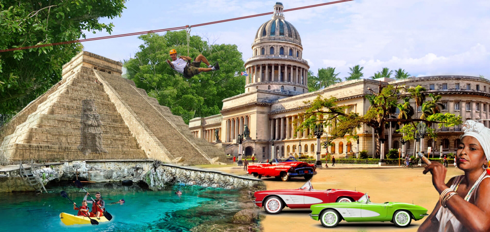

Du lịch Cuba 2024 cùng Du lịch Việt, chúng tôi luôn tổ chức Tour Du Lịch Cuba 2024, những Tour Cuba 2024 chất lượng, giá rẻ để phục vụ khách du lịch trên toàn quốc.
Du lịch Cuba – Cuba, tên gọi chính thức là Cộng hòa Cuba là Quốc gia bao gồm đảo Cuba, cùng với đảo Thanh Niên và các đảo nhỏ xung quanh. Cuba nằm ở phía bắc Vùng Caribe ở giao điểm của ba miền biển lớn: Biển Caribe, Vịnh México và Đại Tây Dương. Tour du lịch Cuba đang được website Du Lịch Việt mở bán trực tuyến hàng ngày, Quý khách hàng có thể chọn tour Cuba để khám phá một vùng đất kỳ lạ và quyến rũ với kiến trúc cổ kính, khí hậu nhiệt đới và người dân vô cùng thân thiện. Và đây cũng là một trong những điểm đến hót nhất với khí hậu nhiệt đới ấm áp và nhiều thắng cảnh đẹp. Hãy liên hệ trực tuyến tại Website Du Lịch Việt để được tư vấn miễn phí bạn nhé!
Cuba cũng là một quốc gia có lịch sử lâu đời, với nền văn hóa đa dạng và ảnh hưởng của các nền văn hóa khác nhau, từ châu Âu, châu Phi đến châu Mỹ. Đến Cuba, bạn sẽ có cơ hội trải nghiệm các di tích lịch sử, kiến trúc độc đáo và các hoạt động vui chơi giải trí phong phú.
Tour du lịch Cuba 2024 của Du lịch Việt không chỉ giúp bạn khám phá các điểm đến nổi tiếng như Havana, Varadero, Trinidad, mà còn cung cấp các dịch vụ cao cấp, tour guide chuyên nghiệp và các hoạt động giải trí đa dạng.
Người bạn thân thiết của Việt Nam trong thời kỳ chiến tranh không chỉ có các nước Đông Nam Á, còn một đất nước nữa rất thân và rất thân đó chính là Cuba. Nhắc đến Cuba là nhắc đến xứ sở của xì gà Havana đã quá đỗi nổi tiếng. Mặc dù là một quốc gia nhỏ bé, thế nhưng Cuba là sở hữu những điều tuyệt vời mà bất cứ khách du lịch Cuba nào cũng muốn khám phá. Hôm nay chúng ta hãy cùng nhau thực hiện chuyến du lịch Cuba để tìm hiểu thêm về người bạn thân thiết của Việt Nam ta các bạn nhé.

Tour du lịch Cuba
Cuba là một quần đảo ở Caribe, là giao điểm của Đại Tây Dương, vịnh Mexico, biển Caribe. Cuba là hòn đảo lớn thứ 17 trên thế giới. Với vị trí tiếp giáp các miền biển lớn thế nên khí hậu của Cuba ôn hòa, và có nắng đẹp quanh năm. Có lẽ không cần phải quá kén chọn thời điểm du lịch Cuba. Vì đa số thời điểm nào trong năm thực hiện tour Cuba cũng rất tuyệt vời.
Tour du lịch Cuba
Cuba có 2 mùa mưa và mùa khô, mùa mưa từ tháng 5 đến tháng 10, mùa khô từ tháng 1 đến tháng 4. Có một thời điểm hay xảy ra mưa bão biển ở Cuba không nên du lịch Cuba vào lúc này đó là vào tầm tháng 6 đến tháng 11. Còn thời điểm du lịch Cuba tuyệt vời nhất theo đánh giá của nhiều người đó là vào tháng 9 đến tháng 12.
Thị trấn Las Terrazas là một điểm du lịch Cuba hấp dẫn. Tour Cuba đến đây du khách sẽ được chiêm ngưỡng vẻ đẹp của một thị trấn yên bình bao bọc xung quanh nó là rừng xanh và các dãy núi, thác nước và hồ. Vẻ đẹp của Las Terrazas tựa như một bức tranh hoang dã nhưng đầy sức sống. Du khách tour du lịch Cuba có thể tận hưởng vẻ đẹp của thị trấn này vào mọi thời điểm trong năm, và đến đây sẽ có một số khu nghỉ dưỡng khách sạn giúp cho du khách có chỗ dừng chân nghỉ ngơi sau một hành trình du lịch Cuba khám phá Las Terrazas.
Một viên ngọc của miền Nam CuBa đó chính là thành phố Cienfuegos. Thực sự rất tuyệt vời tour Cuba chúng ta có thể đặt chân lên thành phố này. Tại đây du khách sẽ được tìm hiểu về những nét lịch sử của Cuba, tìm hiểu về những cuộc chiến trong quá khứ, tham quan các tòa nhà xây dựng kiểu kiến trúc pháp, và ngỡ ngàng trước vẻ đẹp của những khu vườn hoa. Thành phố Cienfuegos có một sự kết hợp pha trộn 2 dòng văn hóa Pháp và Tây Ban Nha thời kỳ đầu.
Bãi biển Cayo Coco là một điểm du lịch Cuba có phong cảnh đẹp nhất. Du khách tour Cuba đến đây sẽ thấy được kiểu kết nối giữa đất liền với các đảo như một dạng kiến trúc. Cayo Coco đem đến một không gian tràn đầy ánh nắng với những làn gió nhẹ khiến du khách cảm thấy thư thái trong tâm hồn, hòa mình vào thiên nhiên tươi đẹp.
Tất nhiên điểm du lịch Cuba mà chắc chắn không ai bỏ lỡ đó được chính là thủ đô Havana của CuBa. Trong đó Old Havana là trung tâm của thủ đô. Du khách tour du lịch Cuba đến đây sẽ được chiêm ngưỡng những công trình kiến trúc Tây Ban Nha, hay khám phá các cảng biển nổi tiếng của thế giới cũ, ngắm nhìn quảng trường lớn với nhiều tượng đài và cung điện. Chuyến du lịch Cuba đến với Havana chắc chắn để lại nhiều ấn tượng nhất cho các du khách.
Bạn đang tìm kiếm một chuyến du lịch Cuba mang phong cách du lịch biển. Thì hãy lựa chọn ngay điểm đến cho tour Cuba của mình là bãi biển Varadero. Đây là một bãi biển tuyệt đẹp, với cảnh quan say lòng người. Tại Varadero cũng có những khách sạn hàng đầu. Du lịch Cuba đến với Varadero du khách sẽ thích thú trong những điệu múa, uống Tequila, tắm nắng, vui chơi với biển cả.
Du lịch Cuba để tưởng nhớ những anh hùng cách mạng vĩ đại nhất của thế giới, và những nhà lãnh đạo Cuba tại lăng Che Guevara. Với những du khách đã trải qua thời kỳ lịch sử kháng chiến, chắc hẳn Che Guevara của Cuba cũng sẽ là một sự tìm hiểu về lịch sử đấu tranh của Cuba và sẽ là điểm du lịch Cuba không thể bỏ qua.